Appendix B — Shooting & Rowing
project olympidata
C Shooting & Rowing
D Import Data
E Packages
F Generating Data
F.1 filter by sports
shooting <- olympics %>%
filter(sport == "Shooting")%>%
drop_na()
shooting
## # A tibble: 542 × 15
## id name sex age height weight team noc games year season city
## <dbl> <chr> <chr> <dbl> <dbl> <dbl> <chr> <chr> <chr> <dbl> <chr> <chr>
## 1 1540 Artur S… M 35 177 88 Ukra… UKR 2008… 2008 Summer Beij…
## 2 1809 Nasser … M 41 178 82 Qatar QAT 2012… 2012 Summer Lond…
## 3 1858 Fehaid … M 33 178 95 Kuwa… KUW 2000… 2000 Summer Sydn…
## 4 1858 Fehaid … M 45 178 95 Kuwa… KUW 2012… 2012 Summer Lond…
## 5 1858 Fehaid … M 49 178 95 Indi… IOA 2016… 2016 Summer Rio …
## 6 2025 Ahmed b… M 40 175 67 Unit… UAE 2004… 2004 Summer Athi…
## 7 2112 Abdulla… M 52 183 83 Indi… IOA 2016… 2016 Summer Rio …
## 8 2608 Yevgeny… M 33 181 88 Russ… RUS 2000… 2000 Summer Sydn…
## 9 2735 Sergey … M 41 168 72 Russ… RUS 2000… 2000 Summer Sydn…
## 10 2735 Sergey … M 45 168 72 Russ… RUS 2004… 2004 Summer Athi…
## # ℹ 532 more rows
## # ℹ 3 more variables: sport <chr>, event <chr>, medal <chr>
rowing<- olympics %>%
filter(sport == "Rowing")%>%
drop_na()
rowing
## # A tibble: 2,104 × 15
## id name sex age height weight team noc games year season city
## <dbl> <chr> <chr> <dbl> <dbl> <dbl> <chr> <chr> <chr> <dbl> <chr> <chr>
## 1 30 Pepijn … M 26 189 72 Neth… NED 1996… 1996 Summer Atla…
## 2 62 Giovann… M 21 198 90 Italy ITA 2016… 2016 Summer Rio …
## 3 106 Agostin… M 22 188 96 Italy ITA 1988… 1988 Summer Seoul
## 4 106 Agostin… M 29 188 96 Italy ITA 1996… 1996 Summer Atla…
## 5 106 Agostin… M 34 188 96 Italy ITA 2000… 2000 Summer Sydn…
## 6 107 Carmine… M 22 182 90 Italy ITA 1984… 1984 Summer Los …
## 7 107 Carmine… M 26 182 90 Italy ITA 1988… 1988 Summer Seoul
## 8 107 Carmine… M 30 182 90 Italy ITA 1992… 1992 Summer Barc…
## 9 108 Giusepp… M 25 187 97 Italy ITA 1984… 1984 Summer Los …
## 10 108 Giusepp… M 29 187 97 Italy ITA 1988… 1988 Summer Seoul
## # ℹ 2,094 more rows
## # ℹ 3 more variables: sport <chr>, event <chr>, medal <chr>F.2 divide by sex
G Primary Studies For Events
G.1 Shooting
G.1.1 male

G.1.2 female
shooting_eventF <- shooting_F %>%
group_by(event)%>%
summarize(avg_h = mean(height),
avg_w = mean(weight),
avg_a = mean(age),
count = n())
ggplot(shooting_F, aes(x = event))+
geom_bar()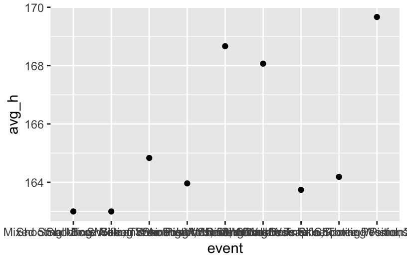

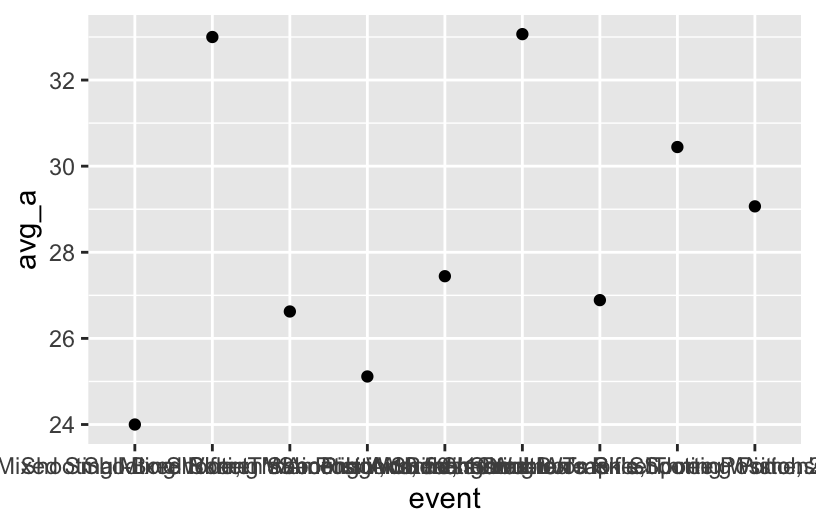
For shooting, from the plots, both average height, weight, and age varied a lot for the prized athletes for both gender. We should pay attention to how event will affect our outcomes, for example, if we are study about year, we have to get rid of the effects from event.
G.2 Rowing
G.2.1 male


G.2.2 female
rowing_eventF <- rowing_F %>%
group_by(event)%>%
summarize(avg_h = mean(height),
avg_w = mean(weight),
avg_a = mean(age),
count = n())
ggplot(rowing_F, aes(x = event))+
geom_bar()


For rowing, from the plot, both average height and weight varied a lot for the prized athletes for both gender, while the average age is in a much smaller range, we should pay more attention on the effect from event for average height and weight.
H Primary Studies For Year
H.1 shooting
H.1.1 male


H.1.2 female
shooting_yearF <- shooting_F %>%
group_by(year)%>%
summarize(avg_h = mean(height),
avg_w = mean(weight),
avg_a = mean(age),
count = n())
ggplot(shooting_F, aes(x = year))+
geom_bar()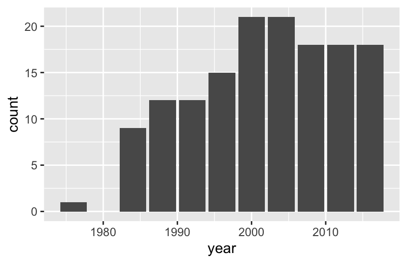
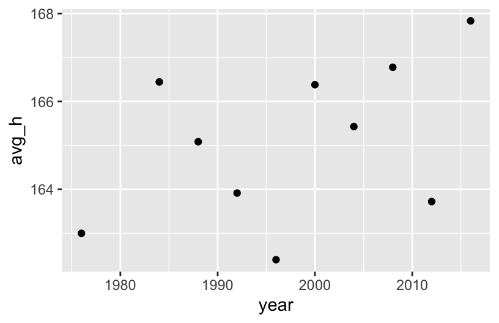

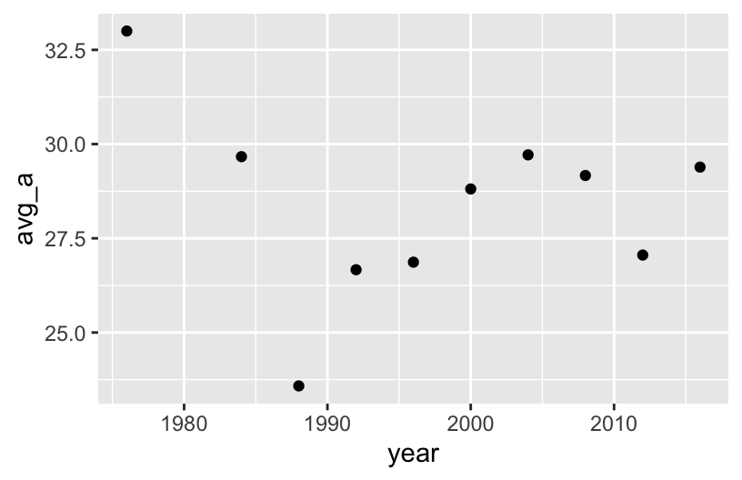
For shooting, most data points are in a small range. In very early years, some data was very different. However, there are few data points in early years, so the effect from year isn’t very obvious for avg_h, avg_w and avg_a.
H.2 Rowing
H.2.1 male
H.2.2 female
rowing_yearF <- rowing_F %>%
group_by(year)%>%
summarize(avg_h = mean(height),
avg_w = mean(weight),
avg_a = mean(age),
count = n())
ggplot(rowing_F, aes(x = year))+
geom_bar()

For rowing, especially for male, both average weight, height, and age have a increasing by year, for female, the trend is not that obvious but still exist. It might be a good point to have more studies.
I Fitting models
I.1 shooting
I.1.1 male
shooting_M<- shooting_M %>%
mutate(event = str_replace(event, "Shooting Men's", ""))%>%
mutate(event = str_replace_all(event, " ", ""))%>%
mutate(event = str_replace(event, ",", ""))%>%
mutate(event = str_wrap(event, width = 6))
ggplot(shooting_M, aes(x = year, y = height))+
geom_point()+
geom_smooth(method = "lm")+
facet_wrap(~ event)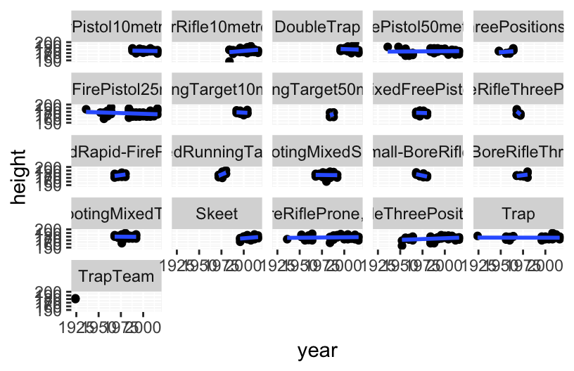
ggplot(shooting_M, aes(x = year, y = weight))+
geom_point()+
geom_smooth(method = "lm")+
facet_wrap(~ event)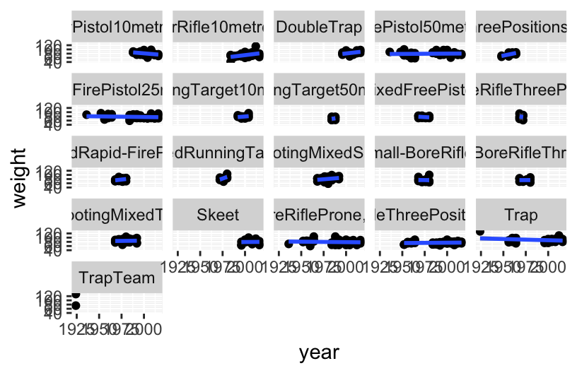
ggplot(shooting_M, aes(x = year, y = age))+
geom_point()+
geom_smooth(method = "lm")+
facet_wrap(~ event)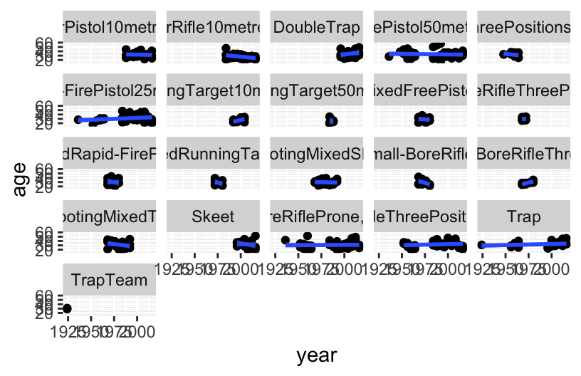
For every event individually, year doesn’t have much effect. The relation showed in previous part might caused by that some events only hold in specific duration, so we might only need a boxplot for events.
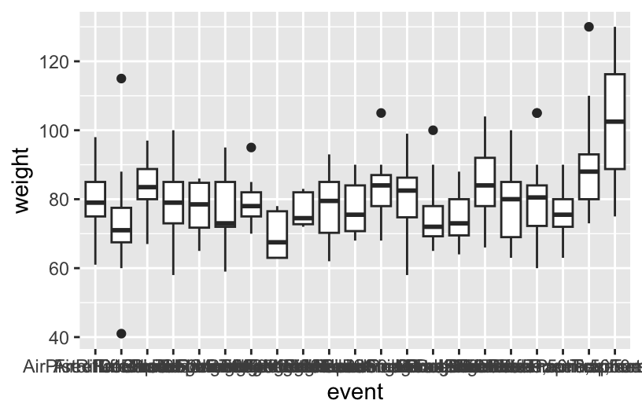
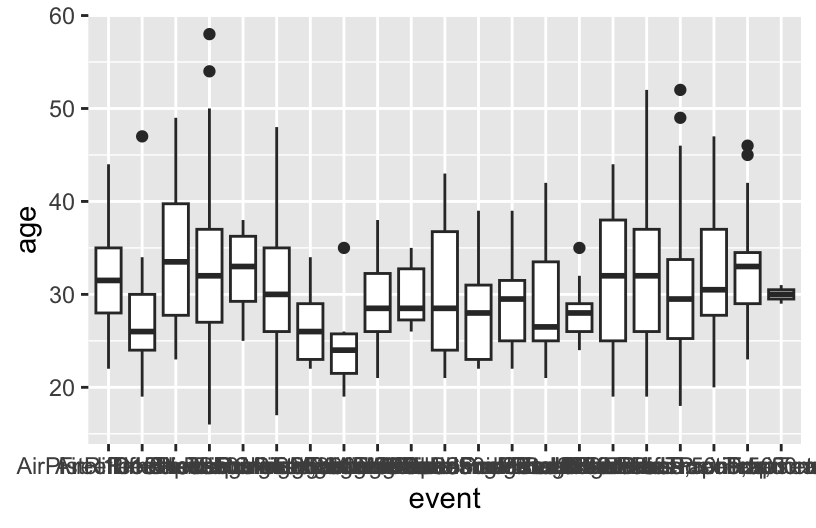
From the boxplot, most male shooting athletes are around 170-180cm despite their event and year; the event trap team will require higher weight than other event, which around 90-115kg, while most other events are around 70-90kg; most events have wide age range from about 25-35, while events including running like running target 50 meters, will have smaller ranges from 20-30.
I.1.2 female
shooting_F<- shooting_F %>%
mutate(event = str_replace(event, "Shooting Women's", ""))%>%
mutate(event = str_replace_all(event, " ", ""))%>%
mutate(event = str_replace(event, ",", ""))%>%
mutate(event = str_wrap(event, width = 6))
ggplot(shooting_F, aes(x = year, y = height))+
geom_point()+
geom_smooth(method = "lm")+
facet_wrap(~ event)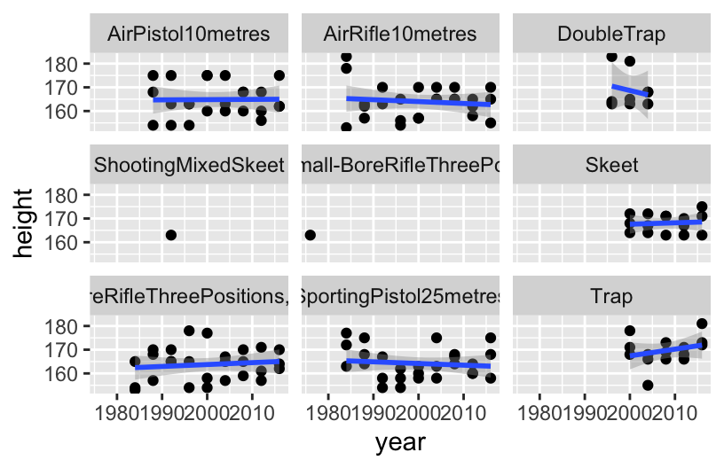
ggplot(shooting_F, aes(x = year, y = weight))+
geom_point()+
geom_smooth(method = "lm")+
facet_wrap(~ event)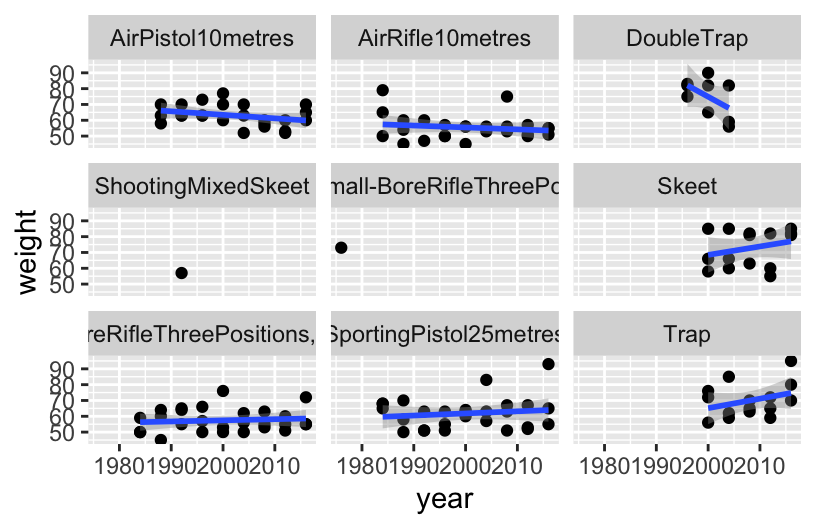
ggplot(shooting_F, aes(x = year, y = age))+
geom_point()+
geom_smooth(method = "lm")+
facet_wrap(~ event)The linear regression also doesn’t show strong relation between weight, age and year for female. However, the weight for event Trap and Skeet increase by year, and Double Trap decreases.
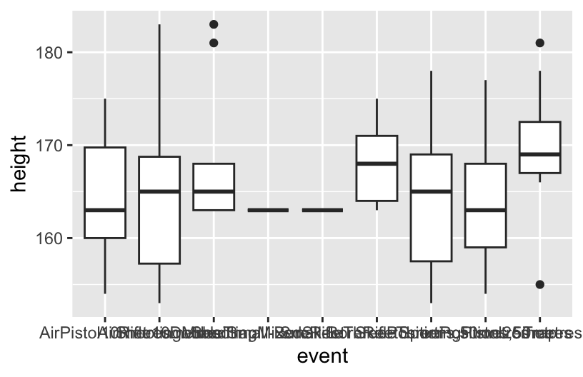
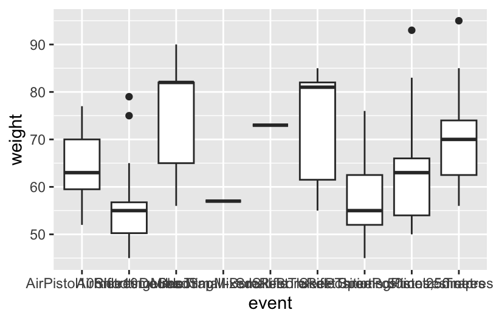
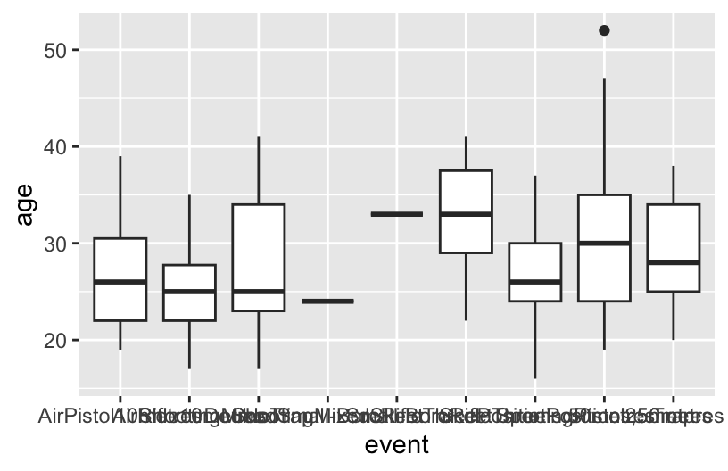
From the boxplot, for almost all event, the best height is in a range covered around 160-170cm, while Trap and Skeet have slightly higher range at about 165-173cm.
The weight varied by event a lot, Air Pistol 10 meters have a range around 60-70kg; Air Rifle 10 meters have a range around 50-55kg; Double Trap have a range around 65-83kg, and its mean value extremely at about 83kg; Skeet have a range around 60-83kg, also have a extrem mean value at about 80kg; Small-Bore Rifle Three Positions 50 meters have a range around 52kg-62kg; Sporting Pistol 25 meters have a range around 55-65kg; and Trap have a range around 63-85kg.
Most events have the best age at a range in 25-35, while Air Pistol 10 meters, Air Rifle 10 meters and Small-Bore Rifle Three Positions 50 meters have younger age almost all under 30.
There are too few data points for Shooting Mixed Sheet and Shooting Mixed Small-Bore Rifle Three Positions,50 metres to have solid conclusion.
I.2 Rowing
I.2.1 male
rowing_M<- rowing_M %>%
mutate(event = str_replace(event, "Rowing Men's", ""))%>%
mutate(event = str_replace_all(event, " ", ""))%>%
mutate(event = str_replace(event, ",", ""))%>%
mutate(event = str_wrap(event, width = 6))
ggplot(rowing_M, aes(x = year, y = height))+
geom_point()+
geom_smooth(method = "lm")+
facet_wrap(~ event)
ggplot(rowing_M, aes(x = year, y = weight))+
geom_point()+
geom_smooth(method = "lm")+
facet_wrap(~ event)
ggplot(rowing_M, aes(x = year, y = age))+
geom_point()+
geom_smooth(method = "lm")+
facet_wrap(~ event)Both height and weight increase by year for almost all events in male rowing while Lightweight Double Sculls and Lightweight Coxless Fours only hold after 2000 that doesn’t show clear relation yet.
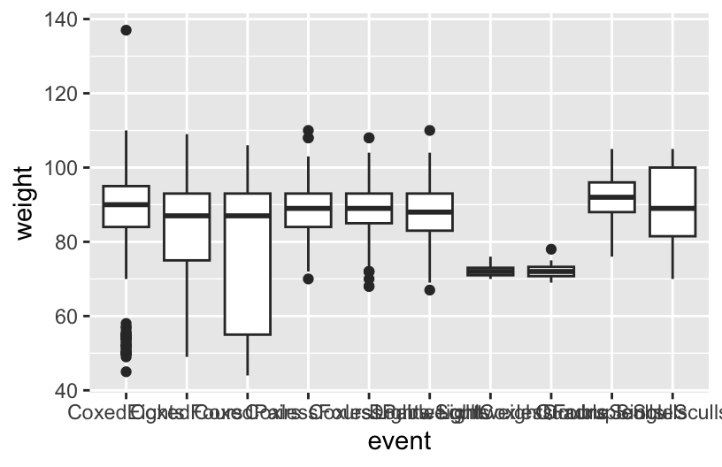
Event have few effects to both weight, height and age for male’s rowing events, the best age is around 23-28; despite of Coxed Paired, Lightweight Double Sculls and Lightweight Coxless Fours, all events have a best range of height around 185-195cm, weight around 85-95kg. Coxed Paired allows wider range that height is around 170-195cm, and weight is around 55-95kg, and Lightweight Double Sculls and Lightweight Coxless Fours have few data points.
I.2.2 female
rowing_F<- rowing_F %>%
mutate(event = str_replace(event, "RowingWomen's", ""))%>%
mutate(event = str_replace_all(event, " ", ""))%>%
mutate(event = str_replace(event, ",", ""))%>%
mutate(event = str_wrap(event, width = 6))
ggplot(rowing_F, aes(x = year, y = height))+
geom_point()+
geom_smooth(method = "lm")+
facet_wrap(~ event)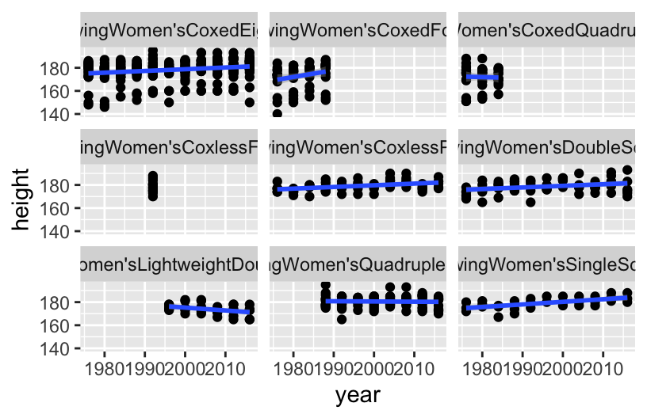
ggplot(rowing_F, aes(x = year, y = weight))+
geom_point()+
geom_smooth(method = "lm")+
facet_wrap(~ event)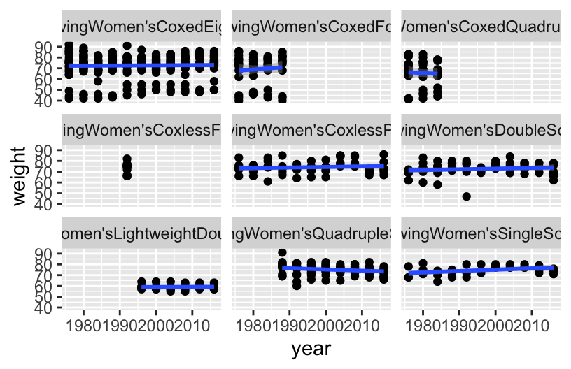
ggplot(rowing_F, aes(x = year, y = age))+
geom_point()+
geom_smooth(method = "lm")+
facet_wrap(~ event)The data points distributed evenly in large ranges by year, so the linear regression doesn’t show obvious relation between both height, weight and age.
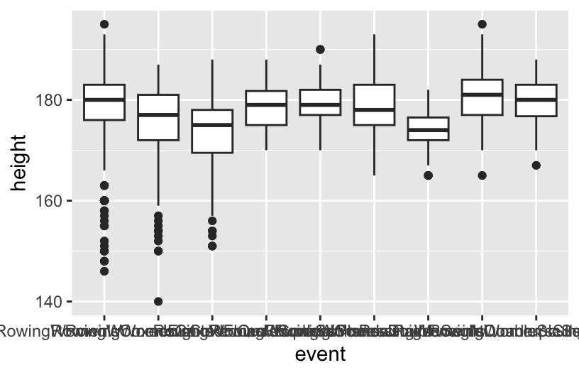
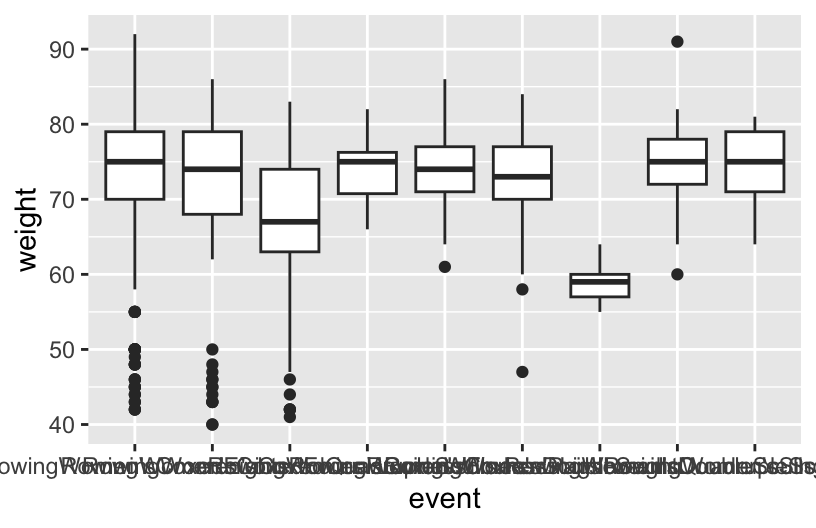
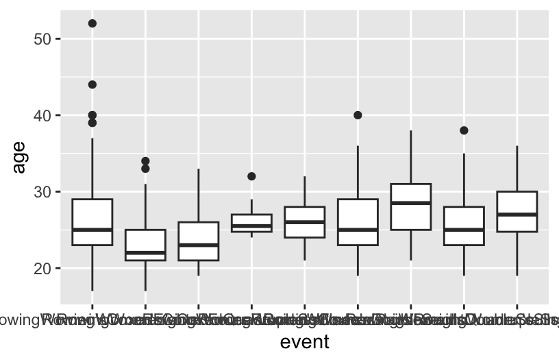
For all events, height, weight and age are roughly in same range. The height is among 175-185cm; weight is among 70-80kg, where Lightweight Double Sculls is much lower since it is lightweight which is among 57-60kg; age is among 25-30.
J Conclusion
Shooting: Most male shooting athletes are around 170-180cm despite their event and year; the event trap team will require higher weight than other event, which around 90-115kg, while most other events are around 70-90kg. For female shooting athletes, for almost all event, the best height is in a range covered around 160-170cm, while Trap and Skeet have slightly higher range at about 165-173cm. The weight varied by event a lot, Air Pistol 10 meters have a range around 60-70kg; Air Rifle 10 meters have a range around 50-55kg; Double Trap have a range around 65-83kg, and its mean value extremely at about 83kg; Skeet have a range around 60-83kg, also have an extreme mean value at about 80kg; Small-Bore Rifle Three Positions 50 meters have a range around 52kg-62kg; Sporting Pistol 25 meters have a range around 55-65kg; and Trap have a range around 63-85kg.
For male shooting athletes, most events have wide age range from about 25-35, while events including running like running target 50 meters, will have smaller ranges from 20-30. For female shooting athletes, most events have the best age at a range in 25-35, while Air Pistol 10 meters, Air Rifle 10 meters and Small-Bore Rifle Three Positions 50 meters have younger age almost all under 30. It seems that for both gender, experience is important, while the events including running still require younger athletes that have better body condition.
(There are too few data points for Shooting Mixed Sheet and Shooting Mixed Small-Bore Rifle Three Positions, 50 meters to have solid conclusion in female shooting events.)
Rowing: For male rowing athletes, despite of Coxed Paired, Lightweight Double Sculls and Lightweight Coxless Fours, all events have a best range of height around 185-195cm, weight around 85-95kg. Coxed Paired allows wider range that height is around 170-195cm, and weight is around 55-95kg. Lightweight Double Sculls and Lightweight Coxless Fours have few data points to have solid conclusion. For female rowing athletes, for all events despite of Lightweight Double Sculls, the height is among 175-185cm; weight is among 70-80kg. Lightweight Double Sculls is much lower since it is lightweight which is among 57-60kg. Moreover, for all events in Rowing, weight and height are increasing very slightly but continually, which might cause by the restrictions to the weight to rowing athletes, there exist a upper bound for them and they are reaching that limitation closer.
For male rowing athletes, the best age is around 23-28; and for female, this range is larger which is 23-30. Rowing has strong requirements to the body conditions of the athletes that younger age is important.